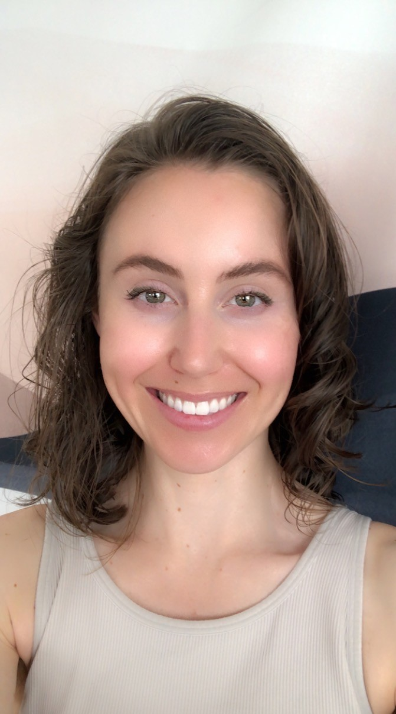

Thank you for visiting my homepage.
I study the interactions between sea level and the solid Earth using satellite observations, computational models, and data science techniques.
The formal training I received as a PhD student in the Department of Physics at CU Boulder focused heavily on computational modeling of viscoelastic deformation of the solid Earth (i.e., the mantle). The guiding question that tied my dissertation together was: how strong are tectonic plates, and what is the nature of the rheology that gives rise to plate tectonics on Earth?
I was fortunate to study mantle convection in the deepest portion of the Earth’s mantle while I was postdoc at MIT using computational models of purely viscous fluid flow.
In my second postdoc, and now as a professional research associate in the Department of Aerospace Engineering, I combine a strong foundation in computational modeling with data analysis and observations from remote sensing (i.e., satellites). I aim to put new and/or tighter constraints on the structure, dynamics, and evolution of the Earth, from core-mantle-boundary to the sea surface.
Please reach out if you see a potential for us to collaborate!
Contact
Ann and H.J. Smead Department of Aerospace Engineering Sciences
Colorado Center for Astrodynamics Research
University of Colorado, Boulder
ashley.bellas (at) colorado (dot) edu